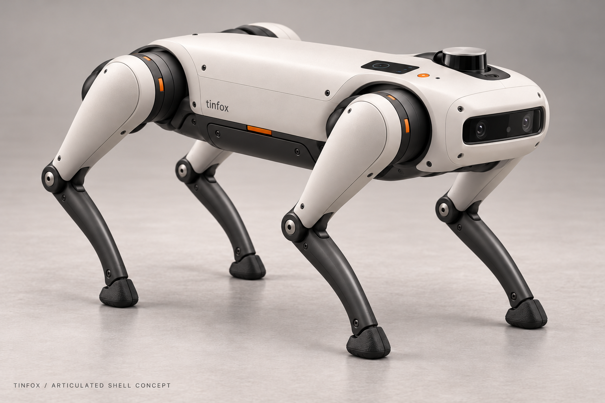
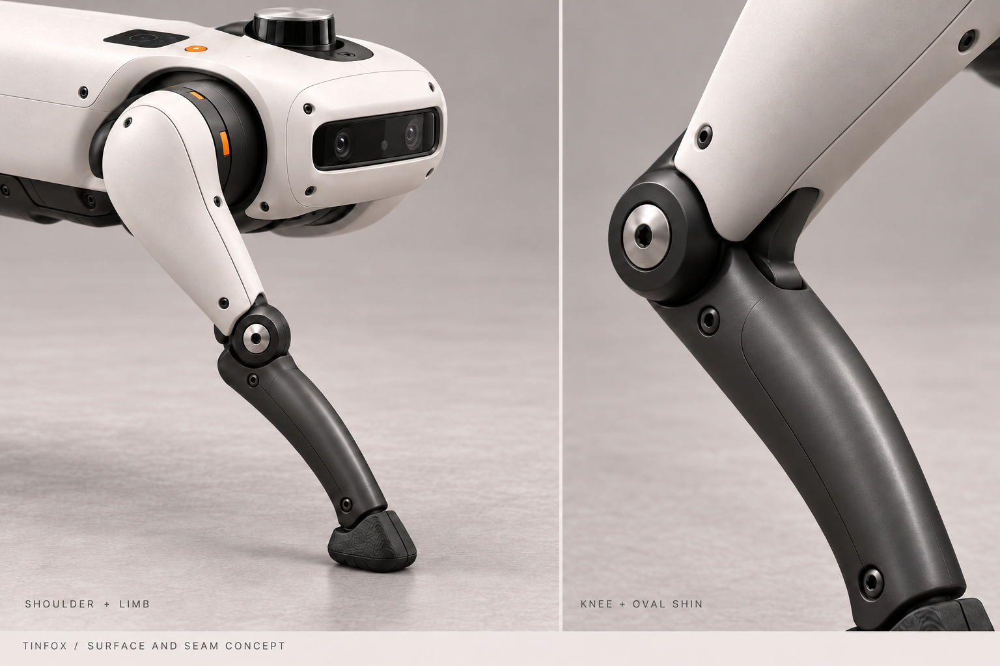

Tinfox / rounded shell concept
Proposed articulated shoulder covers, rounded structural thighs and smooth oval shins. These generated images illustrate surface shape and assembly seams. They are not CAD exports or evidence of validated clearance, strength or manufacturability.

Complete robot: warm off-white body and thighs, graphite shoulder pods and closed oval shins.

Detail: compact shoulder packaging, two-piece limb seams and broad knee transitions. Hardware interfaces remain subject to CAD development.
Generation prompts and provenance · Generated with the built-in image tool. The existing CAD and native Fusion conversion remain unchanged by this concept study.